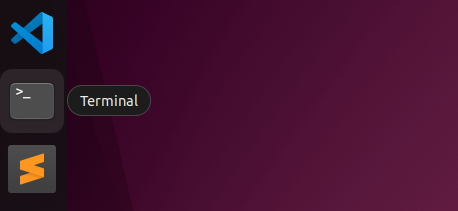
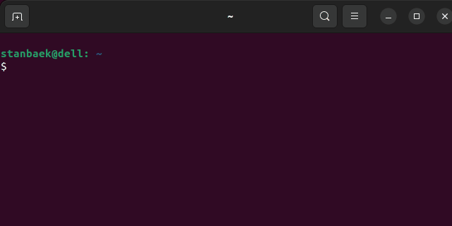
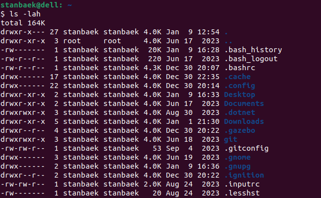

🔬 Lab1: Linux#
📌 bjectives#
Students should be able to use commands like
ls,pwd, andcdto explore directories, navigate using relative and absolute paths, and understand the structure of the Linux filesystem.Students should be able to create files and directories using
touchandmkdir, modify file timestamps, and delete items usingrmandrmdir, including handling hidden and non-empty directories.Students should be able to use advanced
lsoptions such as-lahto display detailed file and directory information, including permissions, ownership, and sizes, and recognize hidden files.Students should be able to use features like tab autocompletion, output redirection (
>), and pipes (|) to streamline their workflow and combine commands for advanced functionality.Students should be able to view system information and processes using commands like
ps,top, andcat /proc/cpuinfo, and perform system actions such as shutting down or restarting from the command line.
Linux Commands 🐧#
During class, we covered several basic Linux commands. In this lab, we will get hands-on practice with those commands.
To log in the Master computer, use
m3if you’re in the M3 section andt5if you’re in the T5 section.Click the Terminal icon on the Dock to open a terminal and practice commands.

You can select an open terminal and use
Ctrl + Shift + nto open a new terminal window orCtrl + Shift + tto add a new tab to the current terminal.When observing the terminal (or Shell) you will notice the following
Syntax:
username@hostname:(e.g., on the master:m3@masterX:, on the robot:pi@robotX)Current working directory: Represented as
~, which refers to the user’s home directory.Prompt: The
$character followed by a blinking cursor, which indicates the terminal is active and ready for commands.
{kind=link}
Using Filesystem#
To master Linux, it’s crucial to understand the filesystem and become comfortable with the Terminal (or shell). While the command line may feel intimidating at first, regular practice will make it second nature.
View Directory Contents: Enter
lsto see the contents of the current directory. You’ll see directories like Desktop, Documents, and Downloads. Color coding helps identify types: directories are blue, files are white, executable files are bright green, and archived files are red. For now, just note that directories are blue and files are white.Display Current Directory Path: Enter
pwdto display the path of the current directory. This will show your home directory path, such as/home/stanbaek.Change Directory: To move from your home directory to the Downloads directory, enter
cd Downloads. Thecdcommand stands for “change directory.” Enterlsagain to view the files inside the Downloads directory.Navigate to Parent Directory: Use
cd ..to navigate back to the home directory. In Linux, two dots..refer to the directory above (the parent directory). A single dot.refers to the current directory. While you don’t usecd .to switch to the current directory, knowing this can be useful for some commands.Root Directory: The root directory is always
/. Enterls /to list the contents of the root directory, andcd /to switch to the root directory. It’s important to understand the difference betweenls Downloadsandls /Downloads. The first command lists the contents of the Downloads directory within the current directory, while the second tries to list a Downloads directory directly under the root, which usually doesn’t exist.View Root Directory Contents: Enter
cd /followed bylsto view the files inside the root directory.Return to Home Directory: Enter
cdto move back to your home directory. Note thatcdis equivalent tocd ~.Complex Paths: The
lsandcdcommands can also be used with more complex paths. For example, enterls /opt/ros/humbleto view the contents of the “humble” directory inside “ros,” which is inside “opt.” Switch to this directory usingcd /opt/ros/humble. To move back up three parent directories, usecd ../../...Autocomplete: Type
cd /ofollowed by the tab key. It will autocomplete tocd /opt/. Press the tab key again to see options likegoogleandros. Typerand press the tab key to chooseros, then press the tab key again to choosehumbleas it is the only directory insideros.
{kind=link}
Listing Files#
Using the desktop GUI to list and move files is easier than using the Terminal and keyboard, but it’s an important skill that you’ll appreciate as you advance with ROS and Linux.
Basic Listing: We’ve already looked at
ls, which lists the files in the working directory. You’re more likely to use a command likels -lah. The bit after the command (the-lah) is known as the argument. This option modifies the behavior of the command. The-largument lists files and directories in “long” format. Each file and directory is now on a single line, and before each file is a lot of text. First, you’ll see letters and dashes, likedrwxr-xr-x. These arepermissions, and we breifly discussed in class.
File Count: After the permission letters, there’s a single number. This is the number of files in the item. If it’s a file, it will be 1, but if it’s a directory, it will be at least 2. Each directory contains two hidden files: one with a single dot (
.) and one with two dots (..). Directories containing files or other directories will have a higher number.Owner and Group: Next, you’ll see your username twice on each line. The first is the owner of the file, and the second is the group. Typically, these will be the same, and you’ll see either
rootor your username. You can enterls -l /to view the files and directories in the root directory that belongs to the root account.File Size: The next number relates to the size of the files, in bytes. The
hargument inls -lahhumanizes the number, making it easier to read.Hidden Files: Be aware that many hidden files in Linux are listed using the
-aargument. Hidden files and directories begin with a dot (.), so you should never start a file or directory with a dot, unless you want to hide it. Typically, you can combine all three arguments into the commandls -lah.
{kind=link}
Creating and Deleting Files#
Creating and deleting files is a fundamental computing skill. When using the Linux Terminal, remember that deleted files are not sent to the system recycle bin, so extra care is needed.
Create a File: Enter
cdto move to the home directory. Typetouch testfileandls -lto view the files. You’ll see a new file calledtestfilewith a size of 0 because it’s empty.Case Sensitivity: Linux is case sensitive. If you enter
touch Testfile(with a capital T), it creates a second file calledTestfile. Enterls -lto see both files. To avoid confusion, most people use lowercase letters consistently.Update Timestamp: Enter
ls -land note the timestamp oftestfile. Then entertouch testfilefollowed byls -land notice the updated time. The touch command updates files or directories with the current system time.No Spaces in File Names: Avoid using spaces in file names. Entering
touch test filecreates two files:testandfile. Instead, use an underscore (_), liketouch test_file.Delete Files: If you’ve followed the steps, you should have five files:
testfile,Testfile,test,file, andtest_file. To delete files, use thermcommand. Enterrm Testfileto delete the file namedTestfile. Enterls -lto confirm its deletion.Use Wildcards: Enter
ls test*to view files that match the wordtestfollowed by any characters. The*wildcard means “any characters here.” Enterrm test*to deletetest,testfile, andtest_file. Finally, enterrm fileto delete it.
Creating and Removing Directories#
After learning to create files, you’ll want to know how to make directories and move items around.
Create a Directory: Enter
lsto view directories in the home directory. Usemkdirto create directories. Entermkdir testdirandlsagain to see it.Timestamp Update: Unlike touch,
mkdirdoes not update the timestamp if used on an existing directory.Multiple Directories: You can create multiple directories at once with
mkdir. Entermkdir testdir2 testdir3andlsto see several directories.Nested Directories: You can create directories within directories using the directory path. Enter
mkdir Documents/photosto create aphotosdirectory insideDocuments. The parent directory must exist, somkdir articles/reportswill fail ifarticlesdoes not exist.Create Directory Path: Use the
-poption withmkdirto create a directory path. Entermkdir -p articles/reportsandlsto view thearticlesdirectory, andls articlesto see thereportsdirectory inside.Remove a Directory: Ensure you’re in the home directory by entering
cd. Then enterlsto view contents. Usermdirto delete directories. Enterrmdir testdir3andlsto confirm deletion.Non-Empty Directories: Try to delete the
articlesdirectory containing thereportsdirectory. Enterrmdir articles. You will get an error. Thermdircommand only removes empty directories. To delete non-empty directories, usermwith the-r(recursive) option. Enterrm -r articlesto delete thearticlesdirectory containing thereportsdirectory.Interactive Deletion: Use the
-i(interactive) option withrmto prompt before each deletion. Enterrm -ri test*and enterYoryfor each prompt. Using-iis a good practice with thermcommand.
Copying, Moving, and Renaming Files#
In Linux, renaming a file is essentially moving it from one name to another, and copying a file involves moving it without deleting the original.
Create Test File and Directory: Enter
touch testfileandmkdir testdirto create a test file and directory in your home directory. Enterlsto confirm their presence.Move Files and Directories: Use the
mvcommand with two arguments: source and destination. Entermv testfile testdirto movetestfileintotestdir. Enterlsto see it’s no longer in the home directory, andls testdirto see it insidetestdir. Create a new directory withmkdir newparent.Move Directories: Move directories with files using the same command. Enter
mv testdir newparentto movetestdirintonewparent. Entercd newparent/testdirandlsto seetestfileinsidetestdir.Move Up Levels: Use the double dot (
..) to move up directories. Enterls -lato view files, including single and double dot entries. Movetestfileup one level withmv testfile ..and entercd ..to move to the parent directory.Hint
Use the tab key to autocomplete paths for the following step.
Longer Paths: Move files using longer paths. Enter
cd ~to return to the home directory, thenmv newparent/testfile newparent/testdir/testfileto movetestfileback totestdir. Enterls newparent/testdirto confirm.Rename Files: Rename and move a file at the same time. Enter
mv newparent/testdir/testfile newparent/testfile2. Enterls newparentto seetestfile2in thenewparentdirectory.
Useful Commands#
Linux is a vast and versatile command line language with hundreds of commands you can learn. Here are a few that can help you get more from your Ubuntu.
View Processor Details: Enter
cat /proc/cpuinfoto see details about the processors.Using
cat: Thecatcommand lists the contents of a text file, such ascpuinfo. You can also open this text file using gedit, a GUI text editor. Entergedit /proc/cpuinfoto view the file in gedit. Note thatcpuinfois read-only.View Memory Information: Enter
cat /proc/meminfoto get information about your memory.Process Status: Type
psto see two items:bashandps. To view processes used by other users (including those started by root), enterps -a. This option shows processes for all users but does not include background processes. For that, enterps -Aorps -e, which shows every process on the system, including background processes. You may need to pipe it throughlessusingps -e | less. Thelesscommand allows you to view the contents one screen at a time. Pressqto exitless.Real-Time Process Monitoring: While
psis useful, you may need to view processes in real-time, especially to check CPU and memory usage. Use thetopcommand for this.Shutdown and Restart: To shut down the computer from the command line, enter
sudo shutdown -h now. The-hoption stands for “halt.” To restart, entersudo shutdown -r.
Input, Output, and Pipes#
Redirect Output: Change the standard output using the
>character after your command. For example,ls -l /etclists all items in the/etcdirectory. Usingls -l /etc > etc.txtoutputs the list to a new text file calledetc.txt.View Output File: The
etc.txtfile now contains the output from thelscommand. Check it usingcat etc.txtornano etc.txt. The output fromls -lwas sent to this file instead of the screen. PressCtrl+Xto quitnano. The>character allows you to output to files, but you can also get input from a file.Using Pipes: As you advance in Linux, you create more powerful commands using the pipe character (
|). Entercat ~/.bashrcto display the.bashrcfile’s content. Now entercat ~/.bashrc | wc. The output fromcatis piped into thewc(word count) command, showing the number of lines, words, and characters in the document.Chaining Commands: You can pipe commands multiple times. Enter
cat ~/.bashrc | sort | grep source*to list lines starting with “source” in alphabetical order. The output fromcatis passed tosort, andsort’s output is passed togrep, which filters out content starting with “source.”
🚚 Deliverables#
Visit Git Repo Setup to create a ROS workspace on the
Mastercomputer and configure your ECE387 classroom repository.Submit Lab 1 on Gradescope.
References
“Raspberry Pi Tips, Tricks & Fixes Vol. 35”, Edited by James Cale, BDM Limited, 2019, ISBN: 2046-2743.